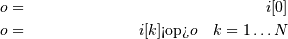
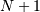
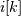
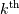
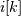
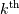
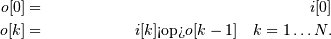

Numpy C Code Explanations¶
Fanaticism consists of redoubling your efforts when you have forgotten your aim. — George Santayana
An authority is a person who can tell you more about something than you really care to know. — Unknown
This Chapter attempts to explain the logic behind some of the new pieces of code. The purpose behind these explanations is to enable somebody to be able to understand the ideas behind the implementation somewhat more easily than just staring at the code. Perhaps in this way, the algorithms can be improved on, borrowed from, and/or optimized.
Memory model¶
One fundamental aspect of the ndarray is that an array is seen as a
“chunk” of memory starting at some location. The interpretation of
this memory depends on the stride information. For each dimension in
an  -dimensional array, an integer (stride) dictates how many
bytes must be skipped to get to the next element in that dimension.
Unless you have a single-segment array, this stride information must
be consulted when traversing through an array. It is not difficult to
write code that accepts strides, you just have to use (char *)
pointers because strides are in units of bytes. Keep in mind also that
strides do not have to be unit-multiples of the element size. Also,
remember that if the number of dimensions of the array is 0 (sometimes
called a rank-0 array), then the strides and dimensions variables are
NULL.
-dimensional array, an integer (stride) dictates how many
bytes must be skipped to get to the next element in that dimension.
Unless you have a single-segment array, this stride information must
be consulted when traversing through an array. It is not difficult to
write code that accepts strides, you just have to use (char *)
pointers because strides are in units of bytes. Keep in mind also that
strides do not have to be unit-multiples of the element size. Also,
remember that if the number of dimensions of the array is 0 (sometimes
called a rank-0 array), then the strides and dimensions variables are
NULL.
Besides the structural information contained in the strides and dimensions members of the PyArrayObject, the flags contain important information about how the data may be accessed. In particular, the NPY_ARRAY_ALIGNED flag is set when the memory is on a suitable boundary according to the data-type array. Even if you have a contiguous chunk of memory, you cannot just assume it is safe to dereference a data- type-specific pointer to an element. Only if the NPY_ARRAY_ALIGNED flag is set is this a safe operation (on some platforms it will work but on others, like Solaris, it will cause a bus error). The NPY_ARRAY_WRITEABLE should also be ensured if you plan on writing to the memory area of the array. It is also possible to obtain a pointer to an unwriteable memory area. Sometimes, writing to the memory area when the NPY_ARRAY_WRITEABLE flag is not set will just be rude. Other times it can cause program crashes ( e.g. a data-area that is a read-only memory-mapped file).
Data-type encapsulation¶
The data-type is an important abstraction of the ndarray. Operations will look to the data-type to provide the key functionality that is needed to operate on the array. This functionality is provided in the list of function pointers pointed to by the ‘f’ member of the PyArray_Descr structure. In this way, the number of data-types can be extended simply by providing a PyArray_Descr structure with suitable function pointers in the ‘f’ member. For built-in types there are some optimizations that by-pass this mechanism, but the point of the data- type abstraction is to allow new data-types to be added.
One of the built-in data-types, the void data-type allows for arbitrary records containing 1 or more fields as elements of the array. A field is simply another data-type object along with an offset into the current record. In order to support arbitrarily nested fields, several recursive implementations of data-type access are implemented for the void type. A common idiom is to cycle through the elements of the dictionary and perform a specific operation based on the data-type object stored at the given offset. These offsets can be arbitrary numbers. Therefore, the possibility of encountering mis- aligned data must be recognized and taken into account if necessary.
N-D Iterators¶
A very common operation in much of NumPy code is the need to iterate over all the elements of a general, strided, N-dimensional array. This operation of a general-purpose N-dimensional loop is abstracted in the notion of an iterator object. To write an N-dimensional loop, you only have to create an iterator object from an ndarray, work with the dataptr member of the iterator object structure and call the macro PyArray_ITER_NEXT (it) on the iterator object to move to the next element. The “next” element is always in C-contiguous order. The macro works by first special casing the C-contiguous, 1-D, and 2-D cases which work very simply.
For the general case, the iteration works by keeping track of a list of coordinate counters in the iterator object. At each iteration, the last coordinate counter is increased (starting from 0). If this counter is smaller then one less than the size of the array in that dimension (a pre-computed and stored value), then the counter is increased and the dataptr member is increased by the strides in that dimension and the macro ends. If the end of a dimension is reached, the counter for the last dimension is reset to zero and the dataptr is moved back to the beginning of that dimension by subtracting the strides value times one less than the number of elements in that dimension (this is also pre-computed and stored in the backstrides member of the iterator object). In this case, the macro does not end, but a local dimension counter is decremented so that the next-to-last dimension replaces the role that the last dimension played and the previously-described tests are executed again on the next-to-last dimension. In this way, the dataptr is adjusted appropriately for arbitrary striding.
The coordinates member of the PyArrayIterObject structure maintains the current N-d counter unless the underlying array is C-contiguous in which case the coordinate counting is by-passed. The index member of the PyArrayIterObject keeps track of the current flat index of the iterator. It is updated by the PyArray_ITER_NEXT macro.
Broadcasting¶
In Numeric, broadcasting was implemented in several lines of code buried deep in ufuncobject.c. In NumPy, the notion of broadcasting has been abstracted so that it can be performed in multiple places. Broadcasting is handled by the function PyArray_Broadcast. This function requires a PyArrayMultiIterObject (or something that is a binary equivalent) to be passed in. The PyArrayMultiIterObject keeps track of the broadcasted number of dimensions and size in each dimension along with the total size of the broadcasted result. It also keeps track of the number of arrays being broadcast and a pointer to an iterator for each of the arrays being broadcasted.
The PyArray_Broadcast function takes the iterators that have already been defined and uses them to determine the broadcast shape in each dimension (to create the iterators at the same time that broadcasting occurs then use the PyMultiIter_New function). Then, the iterators are adjusted so that each iterator thinks it is iterating over an array with the broadcasted size. This is done by adjusting the iterators number of dimensions, and the shape in each dimension. This works because the iterator strides are also adjusted. Broadcasting only adjusts (or adds) length-1 dimensions. For these dimensions, the strides variable is simply set to 0 so that the data-pointer for the iterator over that array doesn’t move as the broadcasting operation operates over the extended dimension.
Broadcasting was always implemented in Numeric using 0-valued strides for the extended dimensions. It is done in exactly the same way in NumPy. The big difference is that now the array of strides is kept track of in a PyArrayIterObject, the iterators involved in a broadcasted result are kept track of in a PyArrayMultiIterObject, and the PyArray_BroadCast call implements the broad-casting rules.
Array Scalars¶
The array scalars offer a hierarchy of Python types that allow a one- to-one correspondence between the data-type stored in an array and the Python-type that is returned when an element is extracted from the array. An exception to this rule was made with object arrays. Object arrays are heterogeneous collections of arbitrary Python objects. When you select an item from an object array, you get back the original Python object (and not an object array scalar which does exist but is rarely used for practical purposes).
The array scalars also offer the same methods and attributes as arrays with the intent that the same code can be used to support arbitrary dimensions (including 0-dimensions). The array scalars are read-only (immutable) with the exception of the void scalar which can also be written to so that record-array field setting works more naturally (a[0][‘f1’] = value ).
Advanced (“Fancy”) Indexing¶
The implementation of advanced indexing represents some of the most difficult code to write and explain. In fact, there are two implementations of advanced indexing. The first works only with 1-D arrays and is implemented to handle expressions involving a.flat[obj]. The second is general-purpose that works for arrays of “arbitrary dimension” (up to a fixed maximum). The one-dimensional indexing approaches were implemented in a rather straightforward fashion, and so it is the general-purpose indexing code that will be the focus of this section.
There is a multi-layer approach to indexing because the indexing code can at times return an array scalar and at other times return an array. The functions with “_nice” appended to their name do this special handling while the function without the _nice appendage always return an array (perhaps a 0-dimensional array). Some special-case optimizations (the index being an integer scalar, and the index being a tuple with as many dimensions as the array) are handled in array_subscript_nice function which is what Python calls when presented with the code “a[obj].” These optimizations allow fast single-integer indexing, and also ensure that a 0-dimensional array is not created only to be discarded as the array scalar is returned instead. This provides significant speed-up for code that is selecting many scalars out of an array (such as in a loop). However, it is still not faster than simply using a list to store standard Python scalars, because that is optimized by the Python interpreter itself.
After these optimizations, the array_subscript function itself is called. This function first checks for field selection which occurs when a string is passed as the indexing object. Then, 0-D arrays are given special-case consideration. Finally, the code determines whether or not advanced, or fancy, indexing needs to be performed. If fancy indexing is not needed, then standard view-based indexing is performed using code borrowed from Numeric which parses the indexing object and returns the offset into the data-buffer and the dimensions necessary to create a new view of the array. The strides are also changed by multiplying each stride by the step-size requested along the corresponding dimension.
Fancy-indexing check¶
The fancy_indexing_check routine determines whether or not to use standard view-based indexing or new copy-based indexing. If the indexing object is a tuple, then view-based indexing is assumed by default. Only if the tuple contains an array object or a sequence object is fancy-indexing assumed. If the indexing object is an array, then fancy indexing is automatically assumed. If the indexing object is any other kind of sequence, then fancy-indexing is assumed by default. This is over-ridden to simple indexing if the sequence contains any slice, newaxis, or Ellipsis objects, and no arrays or additional sequences are also contained in the sequence. The purpose of this is to allow the construction of “slicing” sequences which is a common technique for building up code that works in arbitrary numbers of dimensions.
Fancy-indexing implementation¶
The concept of indexing was also abstracted using the idea of an iterator. If fancy indexing is performed, then a PyArrayMapIterObject is created. This internal object is not exposed to Python. It is created in order to handle the fancy-indexing at a high-level. Both get and set fancy-indexing operations are implemented using this object. Fancy indexing is abstracted into three separate operations: (1) creating the PyArrayMapIterObject from the indexing object, (2) binding the PyArrayMapIterObject to the array being indexed, and (3) getting (or setting) the items determined by the indexing object. There is an optimization implemented so that the PyArrayIterObject (which has it’s own less complicated fancy-indexing) is used for indexing when possible.
Creating the mapping object¶
The first step is to convert the indexing objects into a standard form where iterators are created for all of the index array inputs and all Boolean arrays are converted to equivalent integer index arrays (as if nonzero(arr) had been called). Finally, all integer arrays are replaced with the integer 0 in the indexing object and all of the index-array iterators are “broadcast” to the same shape.
Binding the mapping object¶
When the mapping object is created it does not know which array it will be used with so once the index iterators are constructed during mapping-object creation, the next step is to associate these iterators with a particular ndarray. This process interprets any ellipsis and slice objects so that the index arrays are associated with the appropriate axis (the axis indicated by the iteraxis entry corresponding to the iterator for the integer index array). This information is then used to check the indices to be sure they are within range of the shape of the array being indexed. The presence of ellipsis and/or slice objects implies a sub-space iteration that is accomplished by extracting a sub-space view of the array (using the index object resulting from replacing all the integer index arrays with 0) and storing the information about where this sub-space starts in the mapping object. This is used later during mapping-object iteration to select the correct elements from the underlying array.
Getting (or Setting)¶
After the mapping object is successfully bound to a particular array, the mapping object contains the shape of the resulting item as well as iterator objects that will walk through the currently-bound array and either get or set its elements as needed. The walk is implemented using the PyArray_MapIterNext function. This function sets the coordinates of an iterator object into the current array to be the next coordinate location indicated by all of the indexing-object iterators while adjusting, if necessary, for the presence of a sub- space. The result of this function is that the dataptr member of the mapping object structure is pointed to the next position in the array that needs to be copied out or set to some value.
When advanced indexing is used to extract an array, an iterator for the new array is constructed and advanced in phase with the mapping object iterator. When advanced indexing is used to place values in an array, a special “broadcasted” iterator is constructed from the object being placed into the array so that it will only work if the values used for setting have a shape that is “broadcastable” to the shape implied by the indexing object.
Universal Functions¶
Universal functions are callable objects that take inputs
and produce  outputs by wrapping basic 1-D loops that work
element-by-element into full easy-to use functions that seamlessly
implement broadcasting, type-checking and buffered coercion, and
output-argument handling. New universal functions are normally created
in C, although there is a mechanism for creating ufuncs from Python
functions (frompyfunc). The user must supply a 1-D loop that
implements the basic function taking the input scalar values and
placing the resulting scalars into the appropriate output slots as
explaine n implementation.
outputs by wrapping basic 1-D loops that work
element-by-element into full easy-to use functions that seamlessly
implement broadcasting, type-checking and buffered coercion, and
output-argument handling. New universal functions are normally created
in C, although there is a mechanism for creating ufuncs from Python
functions (frompyfunc). The user must supply a 1-D loop that
implements the basic function taking the input scalar values and
placing the resulting scalars into the appropriate output slots as
explaine n implementation.
Setup¶
Every ufunc calculation involves some overhead related to setting up the calculation. The practical significance of this overhead is that even though the actual calculation of the ufunc is very fast, you will be able to write array and type-specific code that will work faster for small arrays than the ufunc. In particular, using ufuncs to perform many calculations on 0-D arrays will be slower than other Python-based solutions (the silently-imported scalarmath module exists precisely to give array scalars the look-and-feel of ufunc-based calculations with significantly reduced overhead).
When a ufunc is called, many things must be done. The information collected from these setup operations is stored in a loop-object. This loop object is a C-structure (that could become a Python object but is not initialized as such because it is only used internally). This loop object has the layout needed to be used with PyArray_Broadcast so that the broadcasting can be handled in the same way as it is handled in other sections of code.
The first thing done is to look-up in the thread-specific global dictionary the current values for the buffer-size, the error mask, and the associated error object. The state of the error mask controls what happens when an error-condiction is found. It should be noted that checking of the hardware error flags is only performed after each 1-D loop is executed. This means that if the input and output arrays are contiguous and of the correct type so that a single 1-D loop is performed, then the flags may not be checked until all elements of the array have been calcluated. Looking up these values in a thread- specific dictionary takes time which is easily ignored for all but very small arrays.
After checking, the thread-specific global variables, the inputs are evaluated to determine how the ufunc should proceed and the input and output arrays are constructed if necessary. Any inputs which are not arrays are converted to arrays (using context if necessary). Which of the inputs are scalars (and therefore converted to 0-D arrays) is noted.
Next, an appropriate 1-D loop is selected from the 1-D loops available to the ufunc based on the input array types. This 1-D loop is selected by trying to match the signature of the data-types of the inputs against the available signatures. The signatures corresponding to built-in types are stored in the types member of the ufunc structure. The signatures corresponding to user-defined types are stored in a linked-list of function-information with the head element stored as a CObject in the userloops dictionary keyed by the data-type number (the first user-defined type in the argument list is used as the key). The signatures are searched until a signature is found to which the input arrays can all be cast safely (ignoring any scalar arguments which are not allowed to determine the type of the result). The implication of this search procedure is that “lesser types” should be placed below “larger types” when the signatures are stored. If no 1-D loop is found, then an error is reported. Otherwise, the argument_list is updated with the stored signature — in case casting is necessary and to fix the output types assumed by the 1-D loop.
If the ufunc has 2 inputs and 1 output and the second input is an Object array then a special-case check is performed so that NotImplemented is returned if the second input is not an ndarray, has the __array_priority__ attribute, and has an __r{op}__ special method. In this way, Python is signaled to give the other object a chance to complete the operation instead of using generic object-array calculations. This allows (for example) sparse matrices to override the multiplication operator 1-D loop.
For input arrays that are smaller than the specified buffer size, copies are made of all non-contiguous, mis-aligned, or out-of- byteorder arrays to ensure that for small arrays, a single-loop is used. Then, array iterators are created for all the input arrays and the resulting collection of iterators is broadcast to a single shape.
The output arguments (if any) are then processed and any missing return arrays are constructed. If any provided output array doesn’t have the correct type (or is mis-aligned) and is smaller than the buffer size, then a new output array is constructed with the special UPDATEIFCOPY flag set so that when it is DECREF’d on completion of the function, it’s contents will be copied back into the output array. Iterators for the output arguments are then processed.
Finally, the decision is made about how to execute the looping mechanism to ensure that all elements of the input arrays are combined to produce the output arrays of the correct type. The options for loop execution are one-loop (for contiguous, aligned, and correct data- type), strided-loop (for non-contiguous but still aligned and correct data-type), and a buffered loop (for mis-aligned or incorrect data- type situations). Depending on which execution method is called for, the loop is then setup and computed.
Function call¶
This section describes how the basic universal function computation loop is setup and executed for each of the three different kinds of execution possibilities. If NPY_ALLOW_THREADS is defined during compilation, then the Python Global Interpreter Lock (GIL) is released prior to calling all of these loops (as long as they don’t involve object arrays). It is re-acquired if necessary to handle error conditions. The hardware error flags are checked only after the 1-D loop is calcluated.
One Loop¶
This is the simplest case of all. The ufunc is executed by calling the underlying 1-D loop exactly once. This is possible only when we have aligned data of the correct type (including byte-order) for both input and output and all arrays have uniform strides (either contiguous, 0-D, or 1-D). In this case, the 1-D computational loop is called once to compute the calculation for the entire array. Note that the hardware error flags are only checked after the entire calculation is complete.
Strided Loop¶
When the input and output arrays are aligned and of the correct type, but the striding is not uniform (non-contiguous and 2-D or larger), then a second looping structure is employed for the calculation. This approach converts all of the iterators for the input and output arguments to iterate over all but the largest dimension. The inner loop is then handled by the underlying 1-D computational loop. The outer loop is a standard iterator loop on the converted iterators. The hardware error flags are checked after each 1-D loop is completed.
Buffered Loop¶
This is the code that handles the situation whenever the input and/or output arrays are either misaligned or of the wrong data-type (including being byte-swapped) from what the underlying 1-D loop expects. The arrays are also assumed to be non-contiguous. The code works very much like the strided loop except for the inner 1-D loop is modified so that pre-processing is performed on the inputs and post- processing is performed on the outputs in bufsize chunks (where bufsize is a user-settable parameter). The underlying 1-D computational loop is called on data that is copied over (if it needs to be). The setup code and the loop code is considerably more complicated in this case because it has to handle:
- memory allocation of the temporary buffers
- deciding whether or not to use buffers on the input and output data (mis-aligned and/or wrong data-type)
- copying and possibly casting data for any inputs or outputs for which buffers are necessary.
- special-casing Object arrays so that reference counts are properly handled when copies and/or casts are necessary.
- breaking up the inner 1-D loop into bufsize chunks (with a possible remainder).
Again, the hardware error flags are checked at the end of each 1-D loop.
Final output manipulation¶
Ufuncs allow other array-like classes to be passed seamlessly through the interface in that inputs of a particular class will induce the outputs to be of that same class. The mechanism by which this works is the following. If any of the inputs are not ndarrays and define the __array_wrap__ method, then the class with the largest __array_priority__ attribute determines the type of all the outputs (with the exception of any output arrays passed in). The __array_wrap__ method of the input array will be called with the ndarray being returned from the ufunc as it’s input. There are two calling styles of the __array_wrap__ function supported. The first takes the ndarray as the first argument and a tuple of “context” as the second argument. The context is (ufunc, arguments, output argument number). This is the first call tried. If a TypeError occurs, then the function is called with just the ndarray as the first argument.
Methods¶
Their are three methods of ufuncs that require calculation similar to the general-purpose ufuncs. These are reduce, accumulate, and reduceat. Each of these methods requires a setup command followed by a loop. There are four loop styles possible for the methods corresponding to no-elements, one-element, strided-loop, and buffered- loop. These are the same basic loop styles as implemented for the general purpose function call except for the no-element and one- element cases which are special-cases occurring when the input array objects have 0 and 1 elements respectively.
Setup¶
The setup function for all three methods is construct_reduce. This function creates a reducing loop object and fills it with parameters needed to complete the loop. All of the methods only work on ufuncs that take 2-inputs and return 1 output. Therefore, the underlying 1-D loop is selected assuming a signature of [ otype, otype, otype ] where otype is the requested reduction data-type. The buffer size and error handling is then retrieved from (per-thread) global storage. For small arrays that are mis-aligned or have incorrect data-type, a copy is made so that the un-buffered section of code is used. Then, the looping strategy is selected. If there is 1 element or 0 elements in the array, then a simple looping method is selected. If the array is not mis-aligned and has the correct data-type, then strided looping is selected. Otherwise, buffered looping must be performed. Looping parameters are then established, and the return array is constructed. The output array is of a different shape depending on whether the method is reduce, accumulate, or reduceat. If an output array is already provided, then it’s shape is checked. If the output array is not C-contiguous, aligned, and of the correct data type, then a temporary copy is made with the UPDATEIFCOPY flag set. In this way, the methods will be able to work with a well-behaved output array but the result will be copied back into the true output array when the method computation is complete. Finally, iterators are set up to loop over the correct axis (depending on the value of axis provided to the method) and the setup routine returns to the actual computation routine.
Reduce¶
All of the ufunc methods use the same underlying 1-D computational loops with input and output arguments adjusted so that the appropriate reduction takes place. For example, the key to the functioning of reduce is that the 1-D loop is called with the output and the second input pointing to the same position in memory and both having a step- size of 0. The first input is pointing to the input array with a step- size given by the appropriate stride for the selected axis. In this way, the operation performed is

where  is the number of elements in the input,  ,
is the output, and  is the
 element of along the selected axis.
This basic operations is repeated for arrays with greater than 1
dimension so that the reduction takes place for every 1-D sub-array
along the selected axis. An iterator with the selected dimension
removed handles this looping.
,
is the output, and  is the
 element of along the selected axis.
This basic operations is repeated for arrays with greater than 1
dimension so that the reduction takes place for every 1-D sub-array
along the selected axis. An iterator with the selected dimension
removed handles this looping.
For buffered loops, care must be taken to copy and cast data before the loop function is called because the underlying loop expects aligned data of the correct data-type (including byte-order). The buffered loop must handle this copying and casting prior to calling the loop function on chunks no greater than the user-specified bufsize.
Accumulate¶
The accumulate function is very similar to the reduce function in that the output and the second input both point to the output. The difference is that the second input points to memory one stride behind the current output pointer. Thus, the operation performed is

The output has the same shape as the input and each 1-D loop operates
over elements when the shape in the selected axis is .
Again, buffered loops take care to copy and cast the data before
calling the underlying 1-D computational loop.
Reduceat¶
The reduceat function is a generalization of both the reduce and accumulate functions. It implements a reduce over ranges of the input array specified by indices. The extra indices argument is checked to be sure that every input is not too large for the input array along the selected dimension before the loop calculations take place. The loop implementation is handled using code that is very similar to the reduce code repeated as many times as there are elements in the indices input. In particular: the first input pointer passed to the underlying 1-D computational loop points to the input array at the correct location indicated by the index array. In addition, the output pointer and the second input pointer passed to the underlying 1-D loop point to the same position in memory. The size of the 1-D computational loop is fixed to be the difference between the current index and the next index (when the current index is the last index, then the next index is assumed to be the length of the array along the selected dimension). In this way, the 1-D loop will implement a reduce over the specified indices.
Mis-aligned or a loop data-type that does not match the input and/or output data-type is handled using buffered code where-in data is copied to a temporary buffer and cast to the correct data-type if necessary prior to calling the underlying 1-D function. The temporary buffers are created in (element) sizes no bigger than the user settable buffer-size value. Thus, the loop must be flexible enough to call the underlying 1-D computational loop enough times to complete the total calculation in chunks no bigger than the buffer-size.